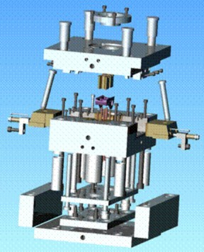
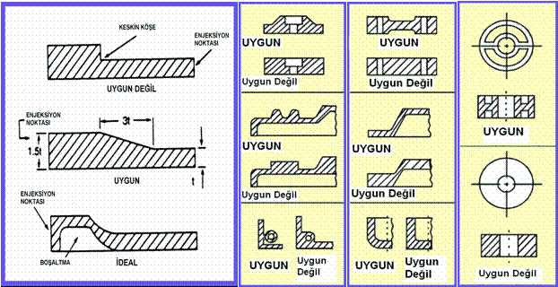
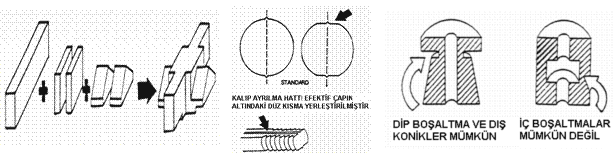
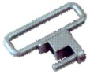
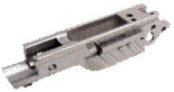
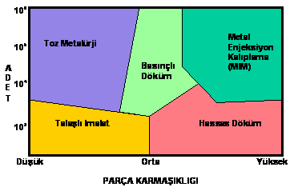
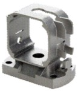
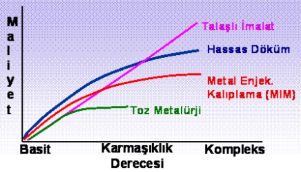

|
Dizayn
Ýpuçlarý:
Genel
olarak plastik ürünlerin imal edilmesinde kullanýlan herhangi
bir þekil veya form MIM teknolojisi için de kullanýlabilmektedir.
Fakat her iki halde de bazý sýnýrlamalar mevcuttur. Ýstenilen
parça geometrisinin üretilmesini saðlayan araçlar enjeksiyon
kalýplarýdýr. Enjeksiyon erimiþ halde bulunan malzemenin basýnçla
kalýp içerisindeki boþluða (kavite) doldurulmasý iþlemidir.
Bir enjeksiyon kalýbý kabaca; parça formunu oluþturacak kalýp
kavitesini (kavite sayýsý birden fazla olabilir) taþýyan sabit
ve hareketli plakalar, parça içerisindeki delik ve boþluklarý
oluþturacak maçalar ve pimler, malzemenin kalýba dolmasýný
saðlayacak yolluk sistemi, soðutma elemanlarý, parçanýn kalýptan
çýkarýlmasýný saðlayan çýkarýcý pimler ve kalýp hamillerinden
meydana gelmektedir. Þekil.5 bir enjeksiyon kalýbýnýn parçalarýný
göstermektedir.
|

|
|
Þekil.
5 - Bir enjeksiyon kalýbýnýn çalýþma prensibi
|
MIM
parçalar için dizayn parametreleri; uniform cidar kalýnlýðý,
boþluk ve deliklerin þekli, kalýp doldurma (enjeksiyon) noktasýnýn
konumu, çýkarýcýlarýn yerleri, kenar ve köþe geçiþleri, vida
(diþ) porifili, kalýp ayrýlma hattý, dip/iç boþaltmalar ve
kombine edilebilecek parça geometrileridir. Uniform cidar
kalýnlýðý sinterleme esnasýndaki çarpýlmalardan kaçýnmak için
kritik bir faktördür. Farklý kesit kalýnlýklarýna sahip bir
parçanýn farklý çekme oranlarýna sahip olmasý parçanýn boyutsal
olarak kontrol edilebilmesini zorlaþtýrýr. Bu nedenle çeþitli
boþaltma teknikleri uygulamak suretiyle hem malzemeden tasarruf
edilmiþ olunur, hem de homojen bir kesit yapýsý teþkil edilebilir
(Bak. Þekil. 6) .
|

|
|
Þekil.
6 - Uniform cidar kalýnlýðý sinterleme esnasýndaki çarpýlmalardan
kaçýnmak için kritik bir dizayn faktörüdür.
|
Malzemenin
kalýba doldurulduðu noktaya enjeksiyon noktasý (veya patlama
noktasý) denmektedir. Ýdeal durumda enjeksiyon noktasý kalýn
kesitten ince kesite doðru kalýbý dolduracak þekilde yerleþtirilmelidir.
Malzeme akýþý kalýp içerisindeki kavite duvarlarýna ya da
bir pime etki ederek gerçekleþmelidir. Tersi durumda katmer
oluþumu, iç gerilimli topaklanmalar ve parça yüzeyinde akýþ
çizgileri gibi istenmeyen olaylar meydana gelebilir. Günümüzde
bir çok MIM parçasý üretkenliðin arttýrýlmasý amacýyla birden
fazla sayýda kavitesi bulunan kalýplarda basýlmaktadýr. Kavitelerin
birbirleriyle idantik olmalarý gerekmektedir. Ayrýca kalýp
setine ait yolluk ve besleyici sistemi her bir kaviteye eþit
miktarda malzeme akýþýný temin edecek biçimde tasarlanmalýdýr.
Enjeksiyon iþlemi sonrasýnda parçanýn kalýptan çýkarýlmasý
itici (veya çýkarýcý) pimler vasýtasýyla olur. Ayrýca derin
delikler ve girintilerin yakalanmasý amacýyla kalýplara 0.5°-
2° arasýnda bir koniklik de verilebilmektedir. Ýtici pimlerin
parça üzerinde minimum iz býrakmasýný saðlayacak þekilde düzgün
yapýlmasý önemlidir. Ýç gerilmelere neden olmasý sebebiyle
keskin köþe ve uç noktalarýndan kaçýnýlmalýdýr. Mümkün mertebe
büyük radyüs veya açý ile geçiþler yapýlmalýdýr. Tipik olarak
(iç veya dýþ) radyüs deðerleri 0.4 mm 'den küçük olmamalýdýr.
Parçanýn kalýptan çýkarýlabilmesi için kalýbýn birbirinden
ayrýlan parçalarý üzerinde kavite çizgisi boyunca oluþmuþ
"ayrýlma hattý" parça üzerine iz çýkarmaktadýr. Bu nedenle
kalýp plakalarýnýn birbirleri ile tam uyumlu biçimde kapanmasý,
parça üzerindeki çapak oluþumunu önlemek açýsýndan gereklidir.
MIM teknolojisinde dip boþaltmalar ve dýþ konikler çokça uygulanan
dizayn opsiyonlarýdýr. Bunlar kalýp maliyetini arttýrarak
enjeksiyon çevrimini uzatsa da O-Ring ve segman yuvalarý gibi
parça fonksiyonu açýsýndan önemli olan geometrilerin elde
edilmesinde yaygýn þekilde kullanýlýr. Diþ (vida) profilleri,
efektif çapýn altýnda teþkil edilen düz bir hat üzerine kalýp
ayrýlma çizgisinin yerleþtirilmesi suretiyle direkt olarak
enjeksiyondan çýkarýlabilir (Bak. Þekil. 7).
|

|
|
Þekil.
7 - MIM Teknolojisinde dizayn opsiyonlarý
|
MIM
Teknolojisinde Sýnýrlar:
Teorik
olarak MIM teknolojisinde parça büyüklüðü ve geometrisi açýsýndan
bir limit yoktur. Ancak ekonomik açýdan bazý sýnýrlar mevcuttur.
MIM teknolojisi göreceli olarak küçük (0.1-150 mm) ve hafif
(0.05-200 gr) ancak diðer imalat yöntemleri ile üretilmesi
zor veya pahalý olabilecek karmaþýk þekilli, kompleks parçalarýn
seri biçimde imal edilmesine uygundur. Parça büyüklüðünün
artmasý, toplam parça maliyeti içerisinde önemli bir yer tutan
ve pahalý olan hammadde miktarýnýn artmasý anlamýný taþýmaktadýr.
MIM'de malzeme maliyeti parça aðýrlýðý ile doðrusal olarak
artmaktadýr. Örneðin talaþlý imalatta bu artýþ hýzý MIM'e
göre daha düþüktür. Diðer taraftan parça kesit kalýnlýklarýnýn
artmasý ayrýþtýrma ve sinterleme iþlemlerinin uzamasýna dolayýsýyla
maliyetin artmasýna neden olmaktadýr. Günümüzün imkanlarý
açýsýndan maksimum kesit kalýnlýðý 10 mm 'dir.
|
Boyut
Faktörü
|
Minimum
|
Önerilen
|
Maksimum
|
 |
| En
Büyük Ölçü (mm) |
0.1 |
5-50 |
150
|
| Kesit
Kalýnlýðý (mm) |
0.1 |
1-7
|
10
|
| Aðýrlýk
(g) |
0.05
|
0.5-50 |
200
|
Tablo.
1 - MIM Parçalar için büyüklük kýsýtlarý
Yeni
bir parça söz konusu olduðunda en fazla sorulan sorulardan
biri de MIM teknolojisi ile elde edilebilecek ölçü toleranslarýnýn
ne olabileceðidir. Genel olarak kritik ölçülerde nominal deðerin
+/- %0.3 (binde üç) 'ü , ancak alt sýnýr olarak da +/-0.015
mm tolerans deðerleri MIM parçalar için önerilmektedir. Uygulamada
daha hassas tolerans deðerlerine ulaþýlabilen örneklere rastlansa
da bunlar özel çalýþmalardýr. MIM parçalar için pratikte elde
edilen toleranslar ISO tolerans sýnýflarý ile karþýlaþtýrýldýðýnda
3-35 mm arasýndaki ölçülerde IT 10 sýnýfý ile hemen hemen
tam bir uyum görünmektedir. Daha küçük parçalarda MIM toleranslarý
daha iyi, büyük parçalarda ise biraz daha geniþ aralýkta yer
almaktadýr. Parça yüzey kalitesi açýsýndan MIM ile saðlanan
yüzey pürüzlük deðerleri
Ra=
0.4-2 mikron arasýnda olup, kullanýlan malzeme cinsine göre
farklýlýk göstermektedir. Ancak yine de MIM parça yüzey kalitesi
hassas döküme göre çok daha iyidir.
|
Toleranslar
|
En
Ýyi
|
Genel
|
 |
| Nominal
Ölçü |
+/-
0.015 mm |
+/-
%0.3 |
| Açý
|
+/-
20' (dk) |
+/-
30' (dk) |
| Yoðunluk |
%99.7
|
%95
|
| Yüzey
Pürüzlüðü (Ra) |
0.4
mikron |
2
mikron |
Tablo.
2 - MIM Parçalar için tolerans kýsýtlarý
MIM
ve Diðer Teknolojiler:
MIM
teknolojisi karmaþýk ve zor parçalarýn kaliteli bir biçimde
ve yüksek miktarlarda üretilmesini gerektiren durumlarda diðer
imalat teknolojilerine göre avantaj taþýmaktadýr. Yüksek yüzey
kalitesi, dar ölçü toleranslarýný karþýlayabilme kabiliyeti,
yüksek yoðunluk nedeniyle üstün malzeme mekanik özellikleri,
seri imalata yatkýn prosesleri, malzeme tasarrufu saðlayan
dizayn ve imalat opsiyonlarý, çevresel faktörler ve geri dönüþüm
açýsýndan geliþmiþ uygulamalarý ve hepsinden öteye maliyet
avantajý MIM teknolojisinin diðer üretim metodlarýna göre
baþlýca üstünlükleridir.
|  |

|
|
Þekil.
8 - Ýmalat Teknolojilerinin Parça Karmaþýklýðý ve Üretim
Miktarý Parametreleri Açýsýndan Uygulama Alanlarý
|
Þekil
8, parça karmaþýklýðý ve üretim miktarlarý açýsýndan imalat
teknolojilerinin optimum çalýþma alanlarýný göstermektedir.
Düþük ve orta karmaþýklýk derecesine sahip parçalarýn 10.000
adet civarýna kadarki üretimlerinde talaþlý imalat metodu
avantajlý görünürken, bu tip parçalarda adedin yükselmesi
durumunda ve malzeme mekanik özelliklerinin yeterli olmasý
halinde toz metalürjisi üstünlük taþýmaktadýr. Orta karmaþýklýk
derecelerinde ve yüksek miktarlarda basýnçlý döküm yöntemi
bir seçenek oluþturmaktadýr. Parça karmaþýklýðýnýn artmasý
ve kompleks þekillerin söz konusu olmasýyla birlikte pratikte
hassas döküm teknolojisi kendini göstermeye baþlamaktadýr.
Ancak burada da üretim miktarý açýsýndan hassas döküm metodu
10.000 adet civarýna kadar üstünlüðünü koruyabilmekte, yüksek
üretim hacimlerinde maliyet avantajýný koruyamamaktadýr. Bu
bölge için sadece MIM teknolojisi ihtiyaçlara cevap verebilen
tek seçenek olarak karþýmýza çýkmaktadýr. Maliyet açýsýndan
bir deðerlendirme yapýldýðýnda da orta karmaþýklýk derecelerine
kadar sadece toz metalürjisi parçalarýn MIM'den ucuz kalabildiði
diðer teknolojilerin MIM'den pahalý olduðu görülmektedir.
Ancak toz metalürjisi de kompleks parçalara doðru geçtikçe
parça formunu oluþturmada yetersiz kalmasý nedeniyle devre
dýþý kalmaktadýr (Bakýnýz Þekil-9). Ýmalat teknolojilerinin
çeþitli parametreler açýsýndan karþýlaþtýrýlmasý Tablo. 3
'de verilmiþtir.
|

|
|
Þekil.
9 - Üretim Maliyetlerinin Parça Karmaþýklýðýna Göre
Karþýlaþtýrýlmasý
|
|
Karakteristik
|
MIM
|
Hassas
Döküm
|
Geleneksel
Toz Metalürji
|
Talaþlý
Ýmalat
|
| Yoðunluk |
97%
|
100%
|
85%
|
100%
|
| Uzama |
Yüksek
|
Orta
|
Düþük
|
Yüksek
|
| Çekme
mukavemeti |
Yüksek
|
Yüksek
|
Düþük
|
Yüksek
|
| Sertlik |
Yüksek
|
Yüksek
|
Düþük
|
Yüksek
|
| Karmaþýk
parça üretim kabiliyeti |
Yüksek
|
Orta
|
Düþük
|
Orta
|
| Yüzey
kalitesi |
Yüksek
|
Orta
|
Orta
|
Yüksek
|
| Maliyet |
Düþük
|
Orta
|
Düþük
|
Yüksek
|
| Üretim
miktarý |
Yüksek
|
Orta
|
Orta
|
Düþük
|
Tablo. 3 - Ýmalat Teknolojilerinin Çeþitli Parametreler Açýsýndan
Kýyaslanmasý
|